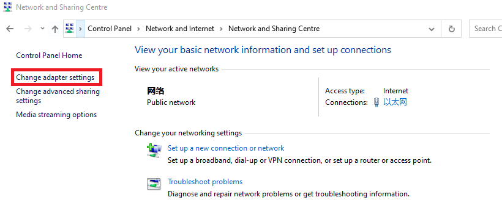
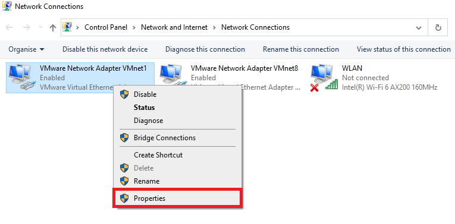
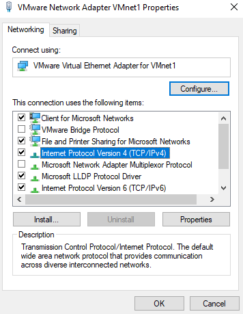
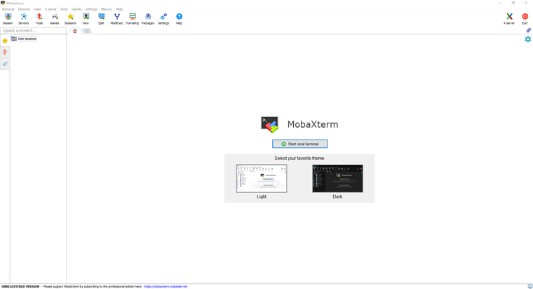
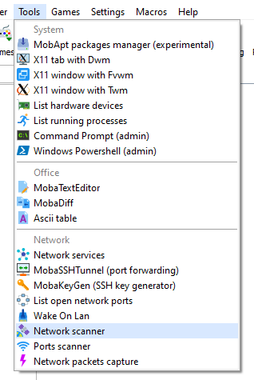
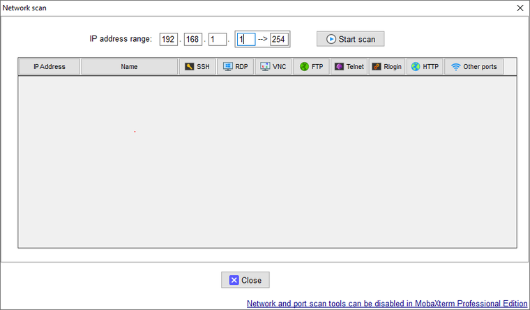
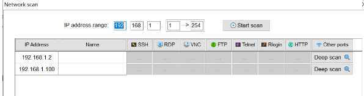

网络配置
默认配置
IP |
子网掩码 |
|
|---|---|---|
BP-AMR |
192.168.1.12 |
255.255.255.0 |
其他BP系列 |
192.168.1.2 |
255.255.255.0 |
子网范围内的任何IP地址都是有效的（例如，对于BP系列摄像机：192.168.1.0 - 192.168.1.255）。
如果您以前没有配置过摄像机的IP地址，摄像机的IP地址将是上表中的默认IP地址。
静态IP网络配置 - PC
此步骤对于使用 多个摄像机
导航至:
控制面板→网络和互联网→网络和共享中心→更改适配器设置。
右键单击→属性。
双击互联网协议版本4（TCP/IPv4）。
选择 使用以下IP地址 →设置IP地址为192.168.1.x。
如果这是第一次设置摄像机，IP地址应该是2以外的任何数字（例如，输入192.168.1.9）。
输入子网掩码。255.255.255.0
点击 确定，完成配置。
备注
请确保所有连接的摄像机的IP地址彼此不同，否则在尝试连接时可能会遇到问题 多个相机.
检查摄像机的IP地址
如果你不知道摄像机的IP地址，你可以使用 MobaXterm 来检查。
打开MobaXterm。
从 工具 下拉列表中，选择 网络扫描器。
在**IP地址范围内输入 192.168.1.1 → 254，然后点击 开始扫描。
扫描后，它将列出本地网络中所有可发现的IP地址。
